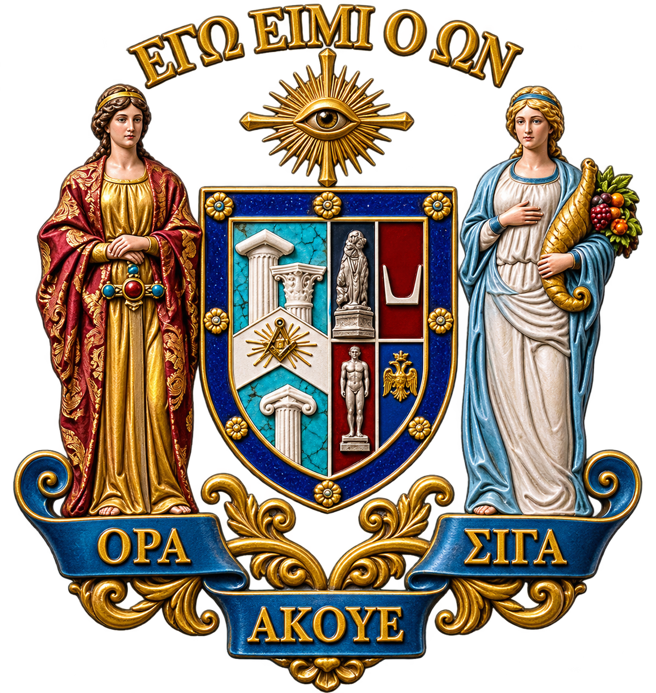

Επιλογή βαθμού / αξιώματος
Όλες οι εικόνες της σύνθεσης
Όλες οι θέσεις εικόνων εμφανίζονται σε κάθε βαθμό και αξίωμα. Βλέπεις την υπάρχουσα εικόνα και τις τιμές της και μπορείς να την αλλάξεις, να τη μετακινήσεις ή να την αφαιρέσεις. Το κόσμημα ΙΒΑ ενεργοποιείται όταν επιλέξεις επιτρεπτή πρόσθετη ιδιότητα ΙΒΑ.
Σύνθεση επιλεγμένου βαθμού
Κάθε βαθμός έχει ανεξάρτητες εικόνες και θέσεις. Επίλεξε ένα στοιχείο και προσάρμοσέ το πάνω στη φιγούρα. Για περιλαίμιο με κόσμημα φόρτωσε δύο ξεχωριστές φωτογραφίες: μία στο «Περιλαίμιο» και μία στο «Κόσμημα περιλαιμίου». Καθεμία έχει ανεξάρτητη θέση και μέγεθος. Η προσθήκη τους δεν αλλάζει τον τίτλο της εικόνας. Τα αρχεία με διάφανο φόντο δίνουν καλύτερο αποτέλεσμα.

Δημοσίευση συνθέσεων
Η αποθήκευση βαθμού κρατά τη σύνθεση σε αυτόν τον browser και ενημερώνει αμέσως την τοπική παρουσίαση. Οι άλλοι επισκέπτες συνεχίζουν να βλέπουν τη δημοσιευμένη έκδοση. Για να τη βλέπουν όλοι, αποθήκευσε τους βαθμούς, εξήγαγε το αρχείο και ανέβασέ το στο repository ως compositions.json, αντικαθιστώντας το προηγούμενο. Μπορείς επίσης να στείλεις το αρχείο στο ChatGPT για commit και push.
Η εισαγωγή αντικαθιστά τις τοπικά αποθηκευμένες συνθέσεις αφού επιβεβαιώσεις. Οι αλλαγές δεν δημοσιεύονται αυτόματα.
Άνοιγμα δημόσιας παρουσίασης